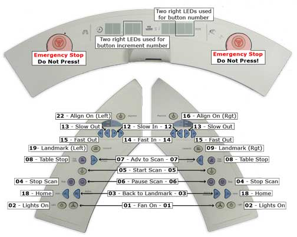

Illustration 2: Buttons/Display Codes (MR/i, CV/i, EXCITE and EXCITE 3.0T)

| NOTE: | Landmark and Align On button codes are different - The Landmark and Align On buttons on the Left Operator Control are on a different circuit than the corresponding buttons on the Right Operator Control. The Longitudinal Position display shows a different number code, depending on whether the button is on the left or right. |